TraceBank 技术答辩逐页预览01 · TraceBank 拾迹银行
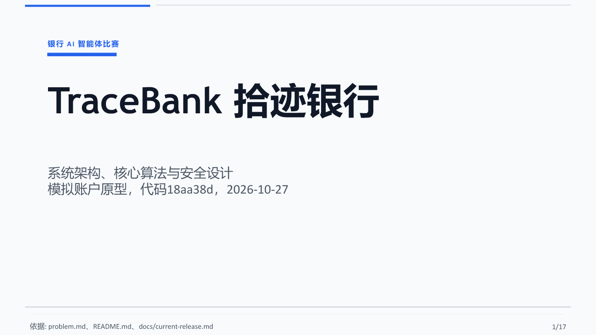
02 · 六类业务共用一套 Agent 执行内核
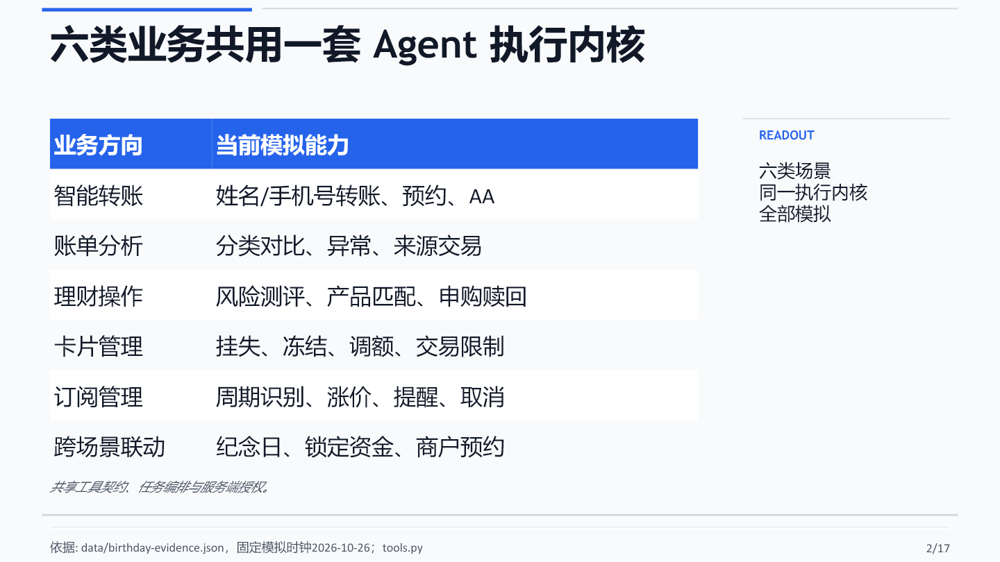
03 · 系统把候选规划、授权执行和证据分开
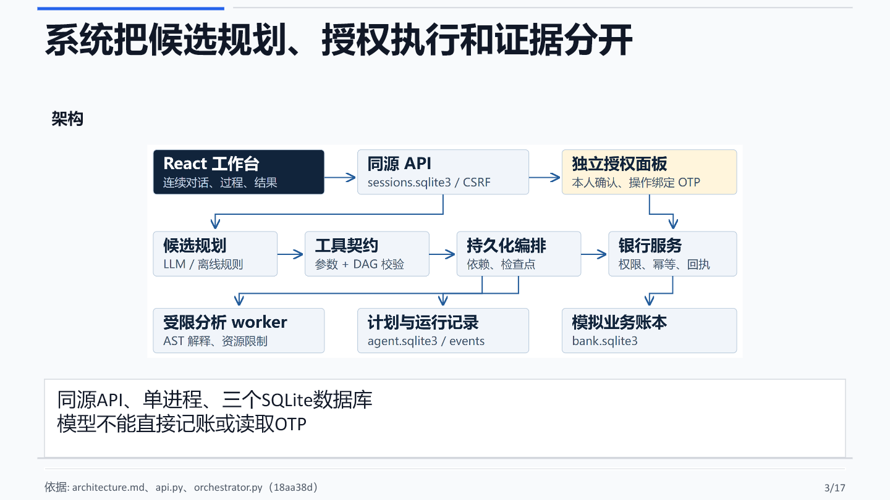
04 · 一次请求经历四个可观察阶段
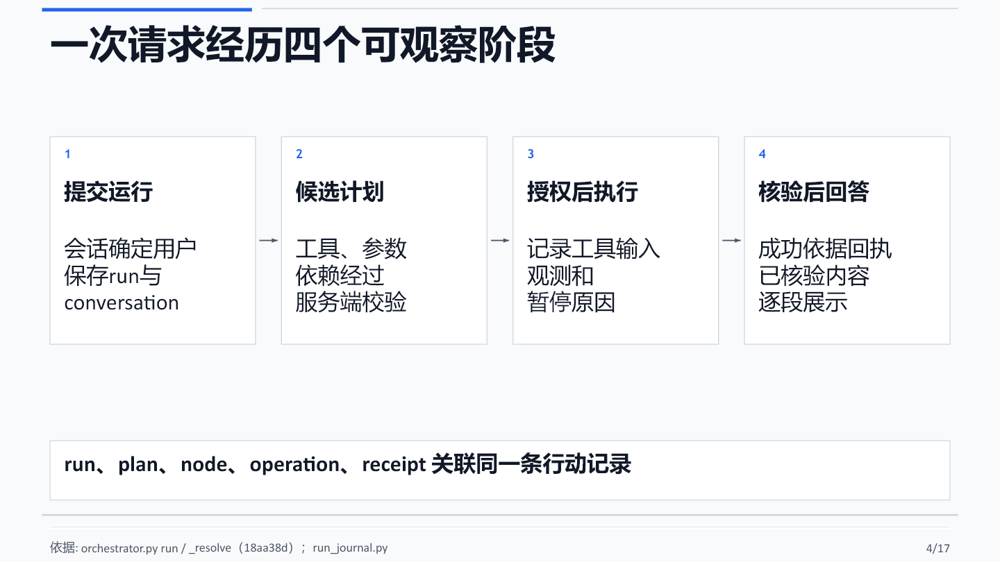
05 · 候选 DAG 必须通过结构和语义约束
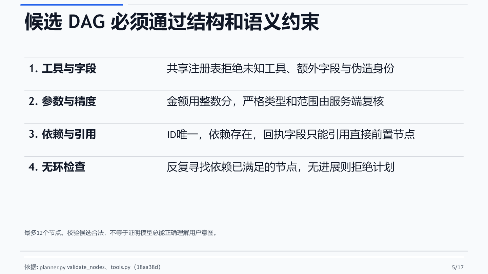
06 · 执行器只推进前置成功的节点
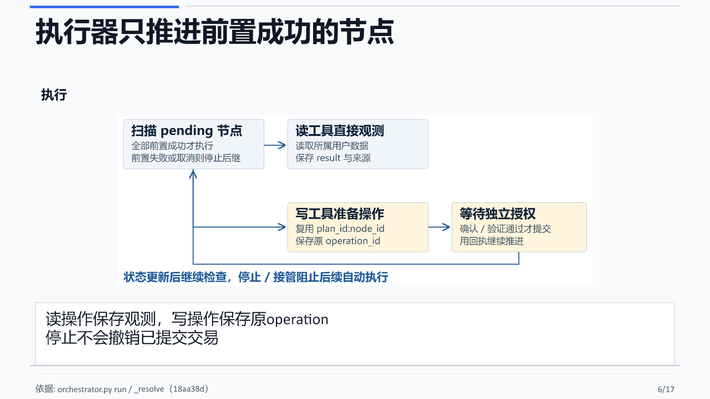
07 · 生日任务用前置回执串起跨场景业务
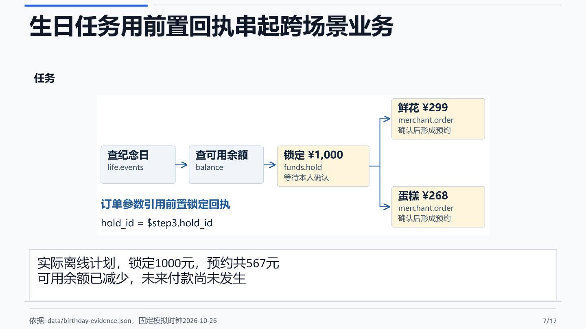
08 · 服务端按业务参数决定授权级别
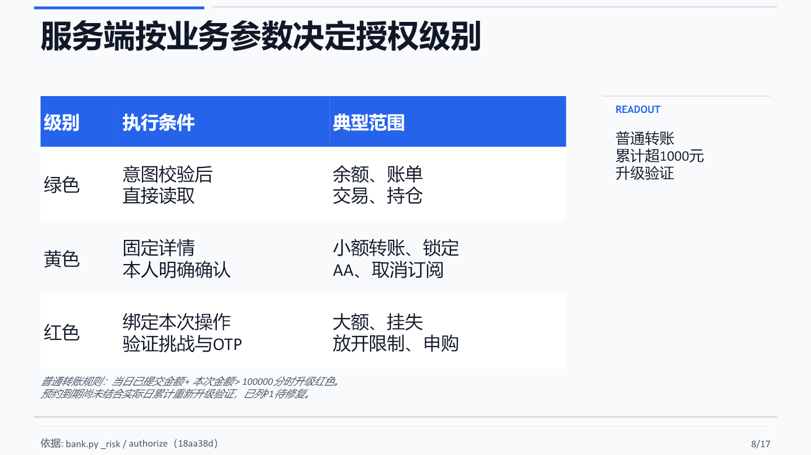
09 · 验证凭据绑定当前操作及其参数
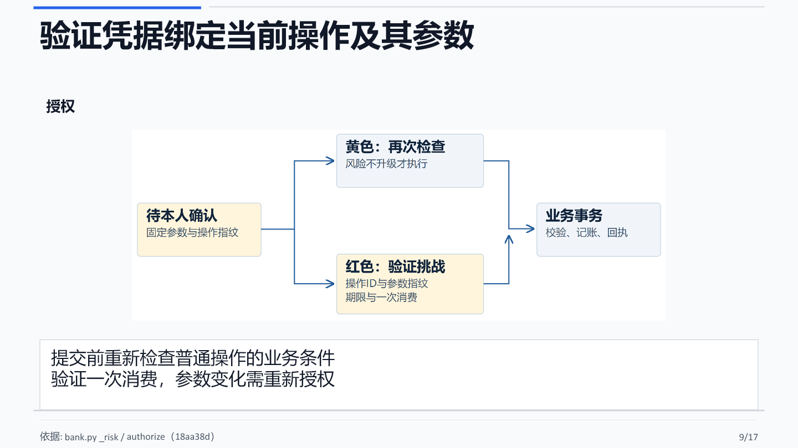
10 · 幂等标识与银行事务约束重复执行
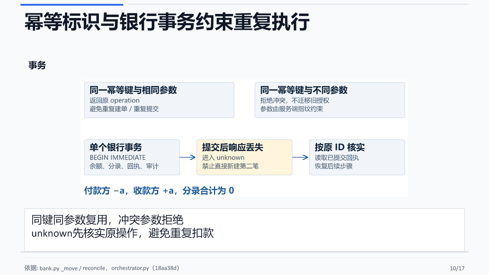
11 · 四类攻击在不同边界受到约束
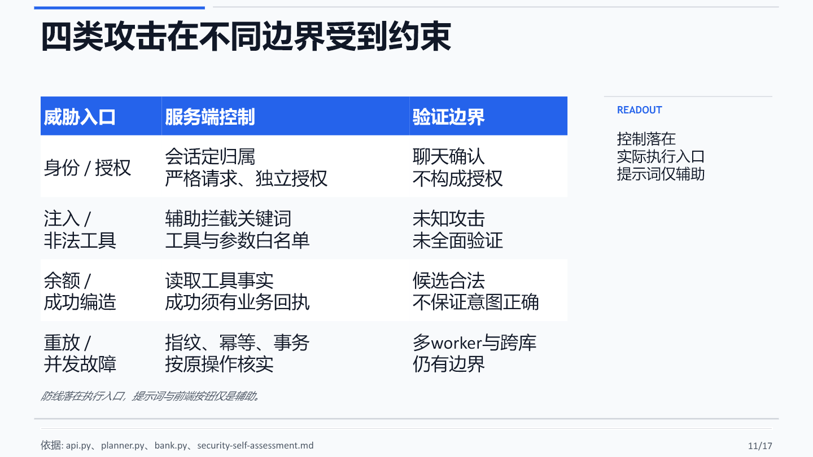
12 · 审计保存证据，受限计算限制能力
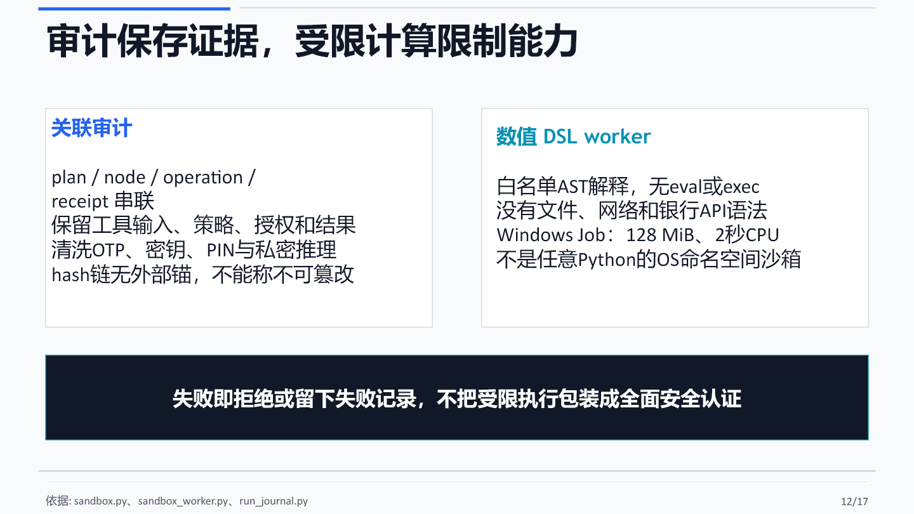
13 · 回答模型只能组织已核验的事实
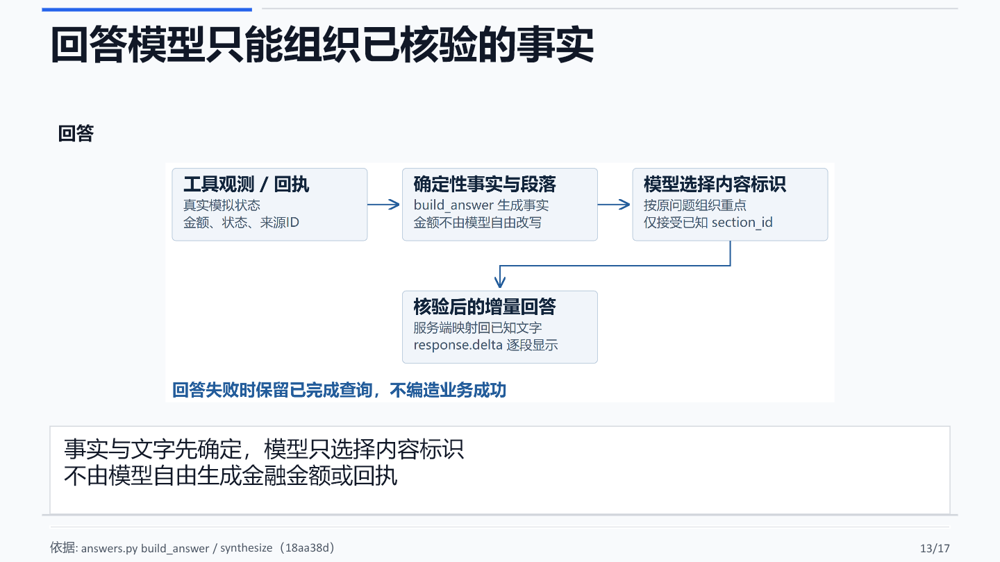
14 · 当前证据覆盖离线执行，仍保留明确缺口
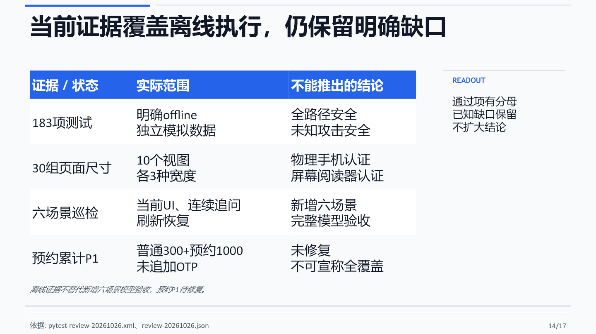
16 · 附录B：适当性、持有期与AA都由规则计算
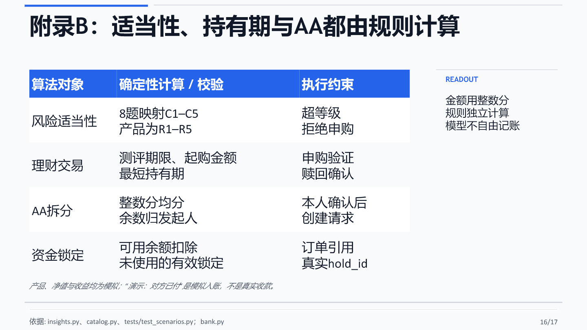
17 · 附录C：每项主张都有源码或实测入口
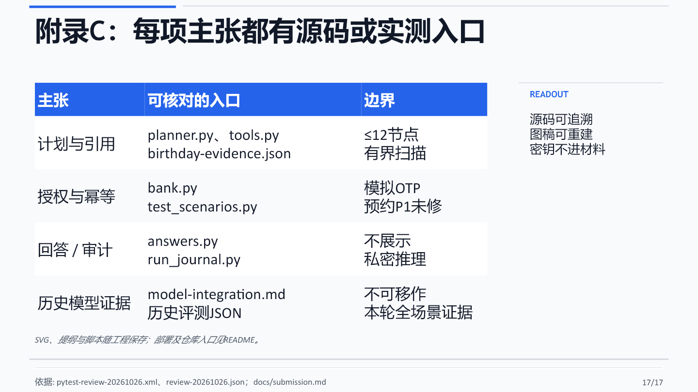